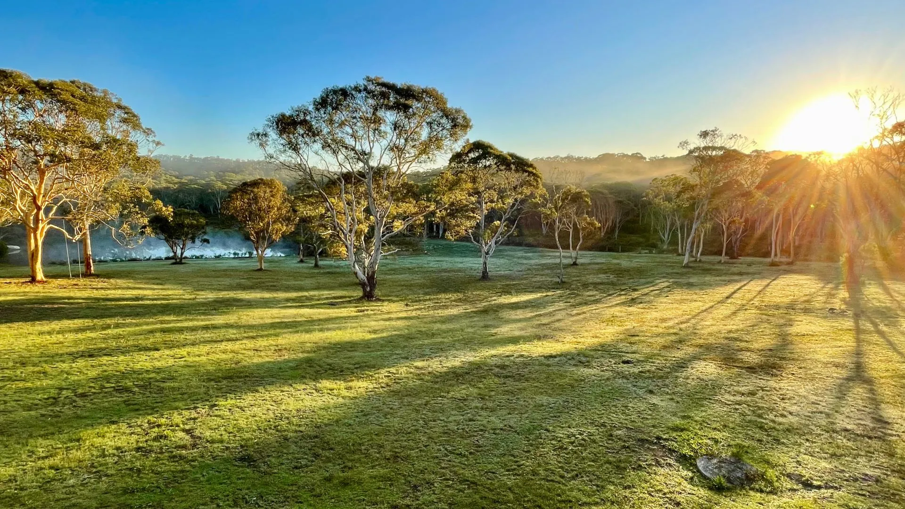
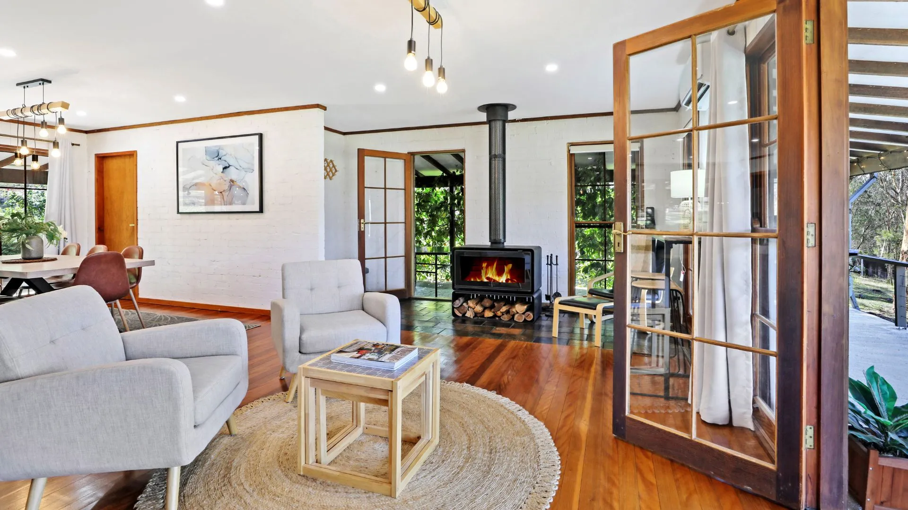
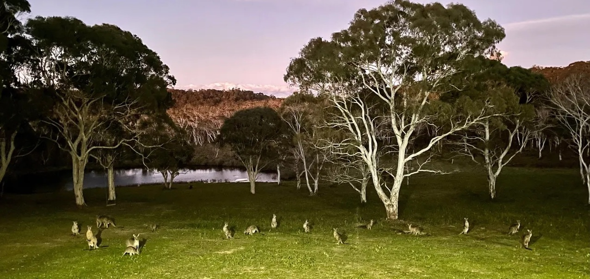

Southern Highlands · New South Wales
A private hundred-acre homestead where the paddocks roll on, the kitchen is the heart of the house, and the wildlife comes to you.
Check availability Explore the homestead
Welcome
Tucked into a quiet fold of the Southern Highlands near Bundanoon, The Burrows is a whole homestead set on a hundred acres of paddock, dam and bush. There are no near neighbours to speak of — just space, birdsong, and the slow rhythm of the country.
It's a place built for gathering. Families spread out, groups settle in around the long kitchen table, and children and dogs run themselves happy across the grass. By night, the fire is lit and the stars do the rest.
Plan your stayWhat guests remember
Wide-open paddocks and bush rolling to the horizon — the kind of view you settle into and don't tire of.
The heart of the house — room for everyone to cook together, with a table made for long, lingering meals.
When the Highlands turn cool and misty, the fireplace is where the evening happens. Cosy, warm, unhurried.
Walk the fence lines, sit by the dam, follow the bush tracks. The whole property is yours to explore.
Kangaroos, wombats, echidnas, possums, black cockatoos — and a platypus down at Paddy's River, if you're lucky.
Far enough to feel remote, close enough for a winery lunch or a village wander. The best of both.

Sit still on the verandah at dusk, and the country comes to you.
The Area
We've put together everything we'd tell a friend — what's on, where to eat and drink, the best walks and lookouts, and the wildlife you'll meet. Yours to use during your stay.
Festivals, fairs, markets and gatherings, month by month.
Open guide → Eat & DrinkCellar doors, restaurants and our favourite village pubs.
Open guide → OutdoorsWaterfalls, escarpment lookouts and Glow Worm Glen.
Open guide → On the propertyWho you'll meet around the homestead and at the river.
Open guide →Your stay awaits
The whole homestead, all hundred acres, sleeping up to nine. Check dates and book securely through Airbnb.
Book on Airbnb